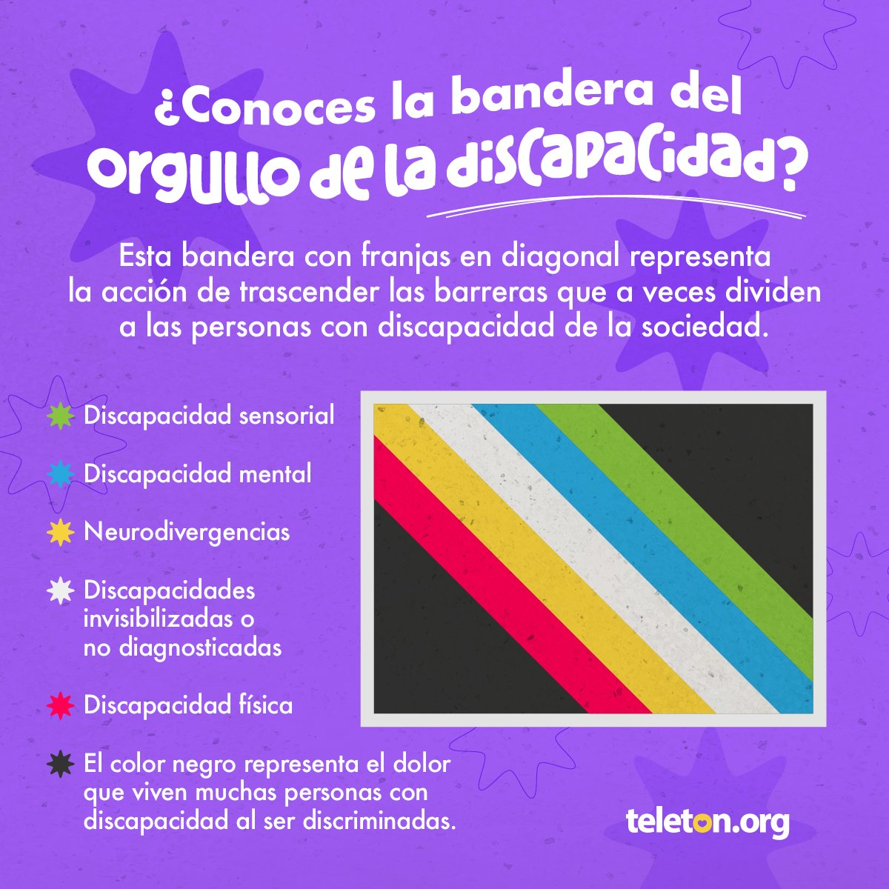

Derechos
Normas que reconocen igualdad, ajustes razonables y no discriminación.
VerHistoria y derechos
Esta página resume momentos clave de la historia de la discapacidad en Colombia: el paso de miradas asistencialistas hacia un enfoque de derechos, participación, accesibilidad y orgullo.
Ver línea de tiempo
Normas que reconocen igualdad, ajustes razonables y no discriminación.
VerEl avance hacia aulas inclusivas y apoyos para aprender en comunidad.
VerLa ciudad, la información y los servicios como espacios para todas las personas.
VerParticipación laboral, medidas afirmativas y oportunidades dignas.
VerIdentidad, cultura y una voz propia frente a los estigmas.
VerLa inclusión se fortalece cuando las personas con discapacidad deciden y lideran.
VerLa Constitución Política fortalece la protección de la igualdad, la dignidad humana y la participación de poblaciones históricamente excluidas.
La Ley 361 establece mecanismos de integración social para personas con limitación y abre camino a reglas sobre accesibilidad, transporte, educación y trabajo.
Colombia aprueba la Convención sobre los Derechos de las Personas con Discapacidad mediante la Ley 1346, incorporando con fuerza el enfoque de derechos.
La Ley Estatutaria 1618 busca garantizar el ejercicio efectivo de los derechos de las personas con discapacidad y promover ajustes razonables.
El Decreto 1421 reglamenta la atención educativa a la población con discapacidad en el marco de la educación inclusiva.
La historia reciente de la discapacidad en Colombia muestra un cambio de lenguaje y de responsabilidad pública: la discapacidad deja de entenderse solo como una condición individual y empieza a reconocerse como una relación entre personas y barreras sociales, físicas, comunicativas y actitudinales.
La Convención sobre los Derechos de las Personas con Discapacidad, aprobada en Colombia por la Ley 1346 de 2009, impulsa la igualdad, la autonomía, la accesibilidad, la participación y el respeto por la dignidad inherente.
La educación inclusiva propone que las instituciones se adapten a las necesidades de sus estudiantes, y no al contrario. Esto implica apoyos, ajustes razonables, participación de familias, accesibilidad comunicativa y una cultura escolar que valore la diversidad.
El Decreto 1421 de 2017 es una referencia central porque reglamenta la atención educativa a personas con discapacidad dentro del sistema educativo colombiano.
La accesibilidad comprende rampas, transporte, señalización, información clara, tecnologías de apoyo, servicios digitales utilizables y atención sin barreras. No es un favor ni un extra: es una condición para ejercer derechos.
En municipios y ciudades, la accesibilidad se vuelve concreta cuando las personas pueden moverse, estudiar, trabajar, participar y recibir información pública sin depender de excepciones.
La inclusión laboral reconoce que las personas con discapacidad tienen derecho a empleo digno, ajustes razonables, formación, permanencia y crecimiento profesional.
Las medidas afirmativas y los incentivos públicos ayudan a corregir exclusiones históricas, pero el cambio más profundo ocurre cuando las organizaciones entienden la discapacidad como parte de la diversidad humana.
El orgullo de la discapacidad reivindica identidad, comunidad y presencia pública. La bandera del orgullo de la discapacidad representa esta idea: no esconder la diferencia, sino reconocerla como parte de una sociedad plural.
Hablar de orgullo no niega las barreras ni las luchas cotidianas. Al contrario, permite nombrarlas desde la dignidad y exigir cambios con voz propia.
La frase "nada sobre nosotros sin nosotros" resume una exigencia clave: las políticas, servicios y proyectos deben construirse con las personas con discapacidad, no solo para ellas.
La participación fortalece la democracia local cuando las comunidades pueden reportar barreras, proponer soluciones, evaluar servicios y liderar transformaciones.